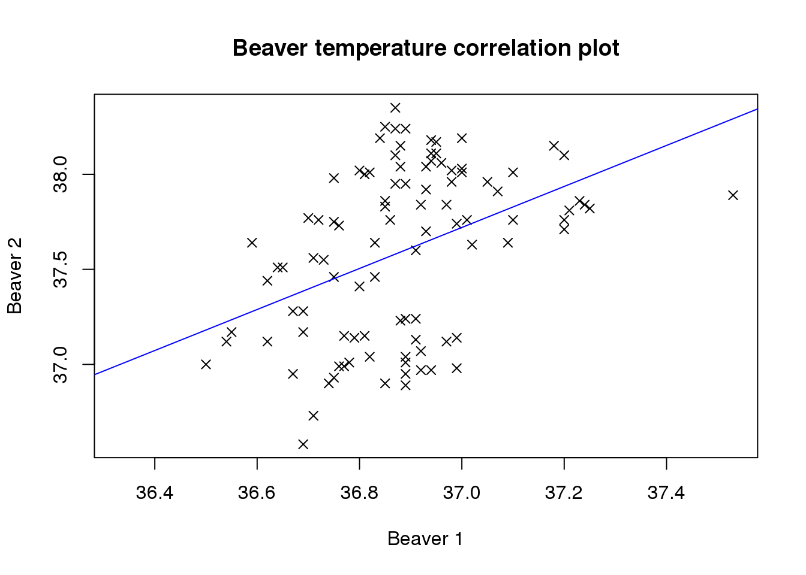
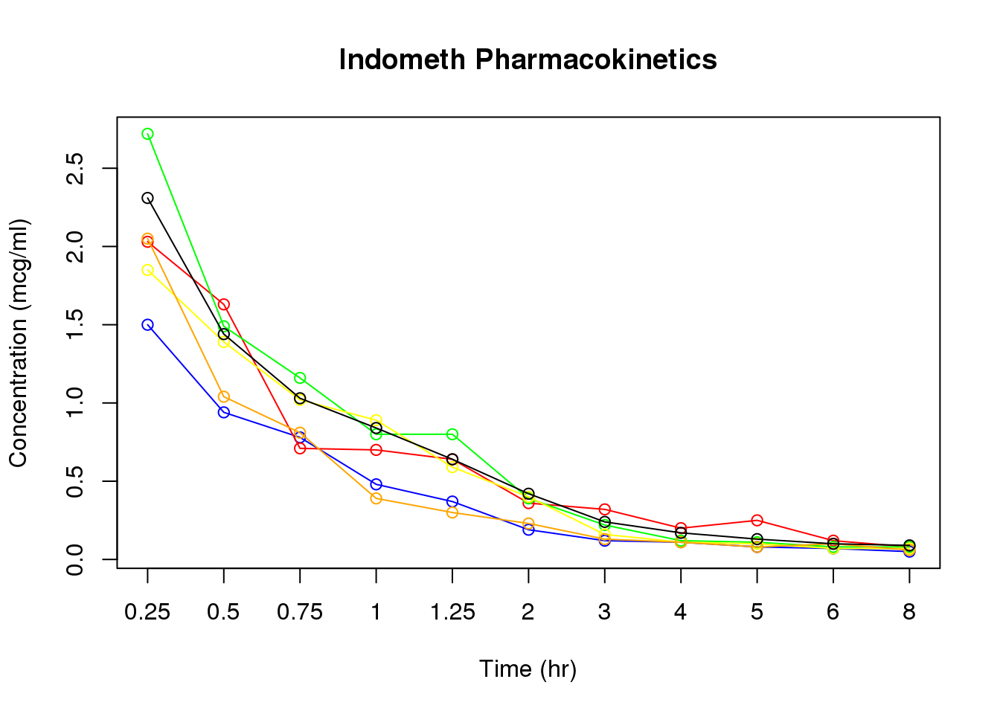

7 Charts and graphical output
7.1.1 Plot
# Make a scatterplot
beaver.temp <- merge(beaver1, beaver2, by = "time", all = TRUE, sort = FALSE)
plot(beaver.temp$temp.x, beaver.temp$temp.y)
# Add a title to the plot
title(main="Beaver temperature correlation plot")
# Change the axis labels
title(xlab = 'Beaver 1')Oops, this doesn’t work - it just overwrites the existing axis label
# Redraw the initial graph without the default labels
plot(beaver.temp$temp.x, beaver.temp$temp.y,ann = FALSE)
# Now we can add the title and axis labels
title(main = "Beaver temperature correlation plot",
xlab = "Beaver 1", ylab = "Beaver 2")
We can change point types to a ’x’ symbol, but we have to draw the graph yet again.
plot(beaver.temp$temp.x, beaver.temp$temp.y,ann = FALSE, pch = 4)
title(main = "Beaver temperature correlation plot",
xlab = "Beaver 1", ylab = "Beaver 2")
# And add a trend line
lm.beaver <- lm(beaver.temp[c('temp.y','temp.x')])
abline(lm.beaver, col = 'blue')
7.1.2 Further timecourse plotting practice
# Remember, check our range
g.range <- range(Indometh[,'conc'])
# Do the plot for the first subject (in blue)
plot(Indometh[Indometh[,"Subject"] == 1, "conc"],
type = 'o',col = 'blue', ylim = g.range,
xlab = "Time (hr)", ylab = "Concentration (mcg/ml)", xaxt = 'n')
# Then add the others
lines(Indometh[Indometh[,"Subject"] == 2, "conc"], type = 'o', col = 'red')
lines(Indometh[Indometh[,"Subject"] == 3, "conc"], type = 'o', col = 'green')
lines(Indometh[Indometh[,"Subject"] == 4, "conc"], type = 'o', col = 'yellow')
lines(Indometh[Indometh[,"Subject"] == 5, "conc"], type = 'o', col = 'orange')
lines(Indometh[Indometh[,"Subject"] == 6, "conc"], type = 'o', col = 'black')
# Then the x-axis scale and title
axis(1, at = 1:11, lab = Indometh[1:11, "time"])
title(main = "Indometh Pharmacokinetics")
7.1.3 Heatmaps
library(RColorBrewer)
# Set up the matrix for our data
# This takes concentration data from Indometh 11 rows at a time
indo.matrix = matrix(Indometh$conc, nrow = 11)
# Then apply Subject number as column names and timepoints as rownames
colnames(indo.matrix) = 1:6
rownames(indo.matrix) <- Indometh$time[1:11]
# Then plot the heatmap.
# Rowv = NA keeps timepoints in order
# Scale = 'none' stops R trying to rescale colours
heatmap(indo.matrix, Rowv = NA, scale = 'none')# But it still has a few problems. The time points are last to first, the
# colours are ugly, and everything from 2h on is the same colour
heatmap(log(indo.matrix[11:1, ]),scale=c("none"), Rowv = NA, col = brewer.pal(11,name='RdBu'))# That's better - reverse the row order of the matrix supplied, log
# transform the data, and use a red-blue scaling7.1.4 PCA plots
# Carry out the PCA analysis. Don't forget to transpose the dataset
golub.full.pca <- pca(t(golub.norm))
# Then plot the results
plotIndiv(golub.full.pca, comp = c(1,2),col = c(rep('red', 27), rep('blue', 11)))Looking at the outcome from both this plot and the selected one hundred genes, there is a clear separation between the ALL and the AML samples. This is a good indication that there is a real biological difference between the two categories which has been captured in the expression data